BTU BTU Lab
The BTU "Mischief Makers"
Make your Mischief!
Use this directory to contact BTU staff about your interests or questions. Next to each person's image, is a list of things they can help you with, and their contact information. Reach out! We love to help.
Become part of the team! Email Zack Weaver if you're interested in sharing your skills with the community.
Zack Weaver | Director
Director, BTU Lab | Assistant Teaching Professor, ATLAS Institute.
zack.weaver@colorado.edu
I am a wizard with:
General Tools
Wood Shop
Sewing & Textiles
Electronics
Lasers (Lazor Wizard)
3D Printing
Shaper CNC
Way, way more
🍁Fall 2026 Staff🍁
Bella Consentino | Staff
Undergraduate Student, ATLAS Institute
Bella.Consentino@colorado.edu
My skills include:
Woodshop
Electronics
Lasers (Lazor Wizard)
Soldering
General Tools
Sewing
3D printing
3D modeling (SketchUp & Blender specifically)
Most of Adobe Suite
Programming (C++, Python, JavaScript, Godot, +more)
Being fitted up
Keturah Dunn | Staff
Undergraduate Student, ATLAS Institute
Head 3D Printing Wizard
keturah.dunn@colorado.edu
My skills include:
3D printing (including multicolor printing!)
3D modeling
Sewing
General Tools
Ask me about HueForge!
Thinking about it
Vani Chhay | Staff
Undergraduate Student, ATLAS Institute
Vanica.Chhay@colorado.edu
My skills include:
General tools
Lasers (Lazor Wizard)
Electronics/Circuits
Prototyping/ Design
3D printing
Soldering
Programming ( Arduino (C++) , Processing (JS, Python)
Sewing
Overwatch
Terri Hughes | Staff
(O.G. Kai's sister!)
Undergraduate Student, ENVD
Terri.Hughes@colorado.edu
Things I can do:
LEATHERWORKING!!!!! i love leather :)
General Tools
Sewing (Hand stitch + Machine + Surging)
Woodshop Tools (Woodshop Wizard)
Lasers (Lazor Wizard)
3D Modeling (Autodesk Inventor, OnShape) and 3D Printing
Chain Making (Chain Jewelry/Spikes/Studs)
Soldering
Queer Dating Advice
Telling you only the things you want to hear
Leo Heuring
Undergraduate Student, ATLAS Institute
President, CU3D
Leo.Heuring@colorado.edu
My skills include:
3D Printing (Ask if you want to try something fun on one of the CU3D printers!)
3D Modeling
CAD (Solidworks)
Electronics + Soldering
Basic PCB design and assembly
Programming (Python, Arduino)
Fabrication
Shaper CNC
Sage Morgan-LaRosa
Undergraduate Student, ATLAS Institute
sage.morgan-larosa@colorado.edu
Sik Skillz
3d modeling (Mostly blender, Sketch up)
3d printing
Coding (C++, Java, Python, typescript, Css)
General electronics
General tools
The vast void of nerdem
Volunteer & Emeritus Mischief Makers
Danny Rankin
Director, Whaaat!? Lab | Assistant Teaching Professor, ATLAS Institute.
danny.rankin@colorado.edu
My skills include:
Woodworking
General shop skills
Laser-cutting (Lazor Wizard)
Installation design
Custom game controllers
Autumn Davis
Undergraduate Student, ATLAS Institute
autumn.davis@colorado.edu
My SuperSkillz™ include:
General Tools
Sewing (Machine/Hand)
Graphic Design & various design software
Adobe Suite
Semiotics stuff (yay!)
Soldering
Laser cutting
Basic 3d printing/modeling help
Lucky Bonniwell
Undergraduate Student, ATLAS Institute
thatcher.bonniwell@colorado.edu
I can help you with:
laser cutting
woodworking
general shop skills
programming
3D modeling
soldering
being a little stinker
Yunessa Rodriguez
Undergraduate Students, ATLAS Institute
Yunessa.Rodriguez@colorado.edu
I can teach:
Rhino
3D Printing
Maybe sum laser cutter stuff
Prototyping
And more fun stuffs
Jacob Le Mons
Undergraduate Student, ATLAS Institute
jacob.lemons@colorado.edu
My skills include:
Design, Prototyping, Documentation
General Tools
Lasers
3D Modelling (Onshape, SketchUp) & Printing
Electronics & Soldering
Woodshop & Basic Metalworking
Basic Sewing & Weaving
Sketching & Graphic Design
Programming (C++, Python, HTML, CSS, JS)
Parkour, Skateboarding, Conversational Japanese
Pete Burke
Undergraduate Student, ATLAS Institute
peter.burke-1@colorado.edu
My skills include:
3D Modeling (SketchUp, Blender)
3D Printing
Woodworking
General Tools
Power Tools
Adobe Suite
Electronics
Project Documentation
Programming (C++, JS)
Anything related to D&D
Elly Jensen
Undergraduate Student, ATLAS Institute
ellyse.jensen@colorado.edu
My skills include:
Sewing
Adobe creative suite
Lasers (Lazor Wizard)
3D printing
General tools
Krithik Ranjan
PhD Student, ATLAS Institute
Krithik.Ranjan@colorado.edu
I can help you with:
Electronics
Soldering
Oscilloscope (or The Omniscient ElectrO Scope) and other electrical tools
PCB design and assembly
Paul Bailey (pictured, left)
Graduate Student, ATLAS Institute
geba2669@colorado.edu
Laser cutting at dawn (Lazor Wizard)
Checking your 3D print at midnight
GIS (Geographic Information Systems)
Corel Draw
Kinetic Sculpture Racing
Human powered art vehicles
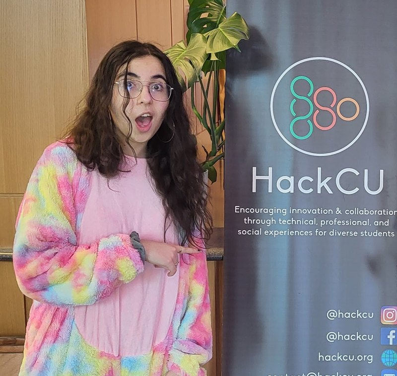
Sena Uctuk (Graduated!)
Undergraduate Student, ATLAS Institute, Computer Science
sena.uctuk@colorado.edu | https://www.linkedin.com/in/suctuk/
Things I can help with:
Prototyping/ modeling
3D printing
Lasers (Lazor Wizard)
Acrylic, Metal, and Wood Fabrication
Soldering
Electronics
Basic sewing machine stuff
Code: C++, WebDev, JS, Python
Arjun Ramachandran
Graduate Student, ATLAS Institute
arjun.ramachandran@colorado.edu
Things I'm good at:
General Tools
Electronics/Circuits
Drawing/Sketching
Rapid Prototyping/Fabrication
Robotics
Bart Baker (Graduated!)
Undergraduate Student, ATLAS Institute
bartholomew.baker@colorado.edu
I can make your life better in:
Woodworking
Fabrication
Lasercutting
Soldering
Speakers
Graphic Design
Illustrator/InDesign
All things music!
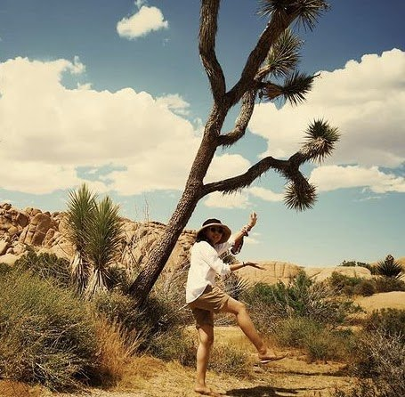
Xin Wen
PhD Student, ATLAS Institute
xin.wen@colorado.edu
I am happy to help you with:
Sewing & Textiles
Electronics
Lasers (Lazor Wizard)
3D Printing (I've done it elsewhere but still need to do the BTU 3D printing training)
Programming
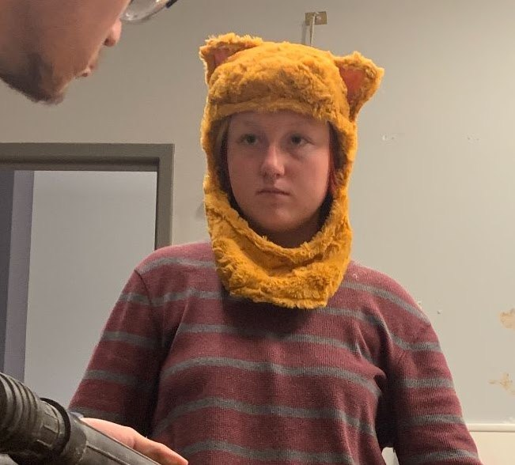
Ashley Stafford (Graduated!)
Undergraduate Student, ATLAS Institute
Ashley.Stafford@colorado.edu
SPRING '25 STAFF
Things I know:
General Tools
Lasers (Lazor Wizard)
Sewing
3D Printing
Basic Electronics
The Horrors
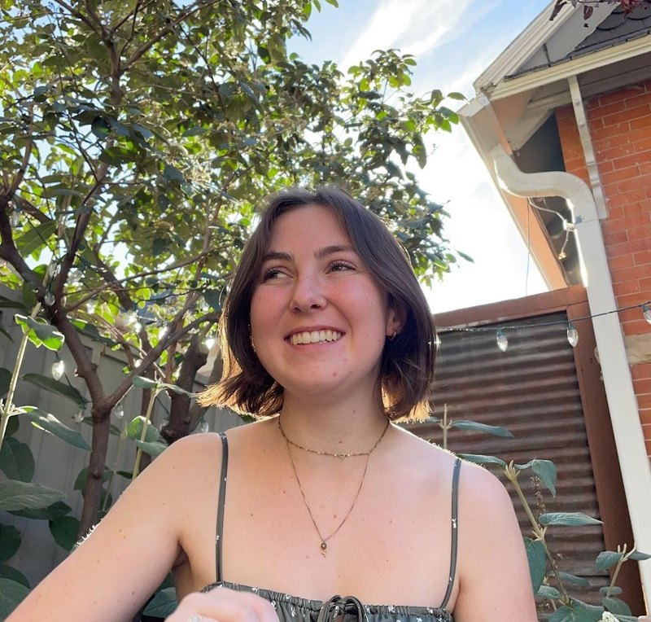
Kai Adamchak (Graduated!)
Undergraduate Student, ATLAS Institute
kai.adamchack@colorado.edu
Things I Can Help With:
3D modeling
Adobe
Procreate/Digital Art
Prototyping
Artsy Stuff
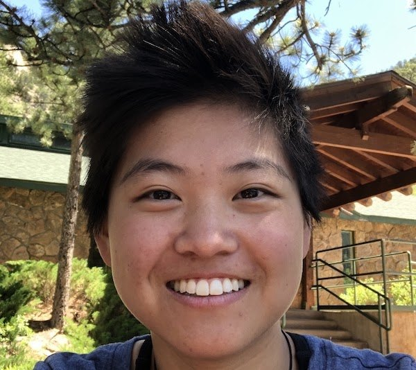
Sophie Berry (Graduated!)
Undergraduate Student, ATLAS Institute
sophie.berry@colorado.edu
SPRING '25 STAFF
Things I can help with:
Prototyping/ modeling
3D printing
Lasers (Lazor Wizard)
General tools
Soldering
Electronics
Basics sewing machine stuff
Kaya Walker (Graduated!)
Undgergraduate Student, ATLAS Institute
kaya.walker@colorado.edu
I like to help people with:
General Tools
Sewing and Textiles
LASERS!
Electronics
Ceramics
ATLAS Social Media (LMK if you make cool things!)
Nefeli Hadjiyiannis (Graduated!)
Undergraduate Student, ATLAS Institute
nefeli.hadjiyiannis@colorado.edu
Here to help you with:
Sewing/Textiles
3D modeling
Adobe & Animation
Soldering
Simple Electronics
Programming
General Tools
Vibes
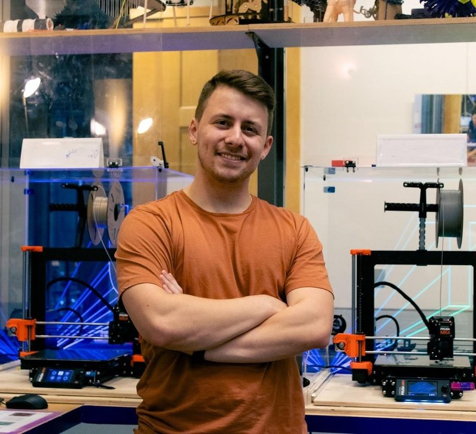
Andrew Widner (Graduated!)
Undergraduate Student, CU3D President, ATLAS Ambassador
Head 3D Printer Wizard
anwi5661@colorado.edu
Want to try something crazy on one of the CU3D printers? Have a material you’re not sure how to use? Want to learn how a 3D printer works? Reach out to me!
I would be happy to help with:
Advanced 3D printing
CAD (Fusion / OnShape)
3D modeling / Digital sculpting
Model rendering / Animation
Everything Blender
Quinn Pearson
Undergraduate Student, ATLAS Institute
FALL '24 STAFF
Quinn.Pearson@colorado.edu
I can help you with:
Lasers!
Electronics
General tools
Woodshop
Soldering
Creative problem solving
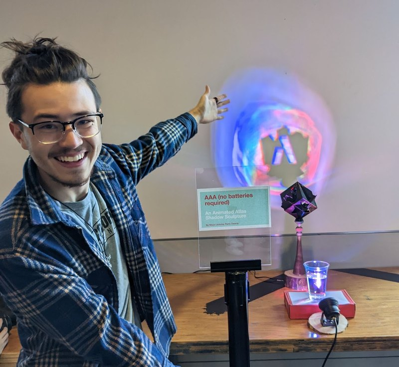
Perry Owens
SPRING '24 STAFF
Graduate Student, ATLAS Institute
Perry.Owens@colorado.edu
I work magic with:
Woodshop
General Tools
Lasers
3D modeling
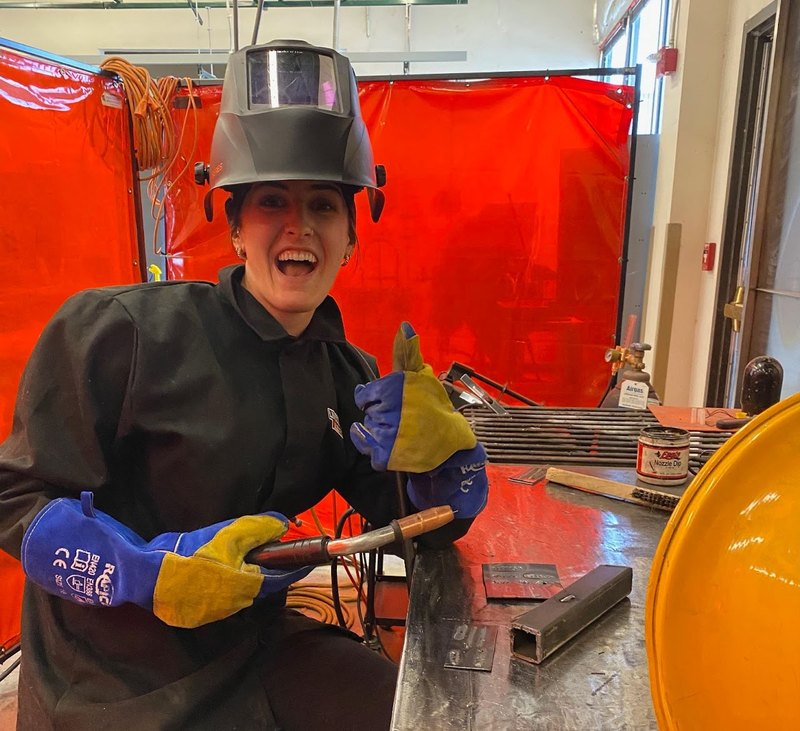
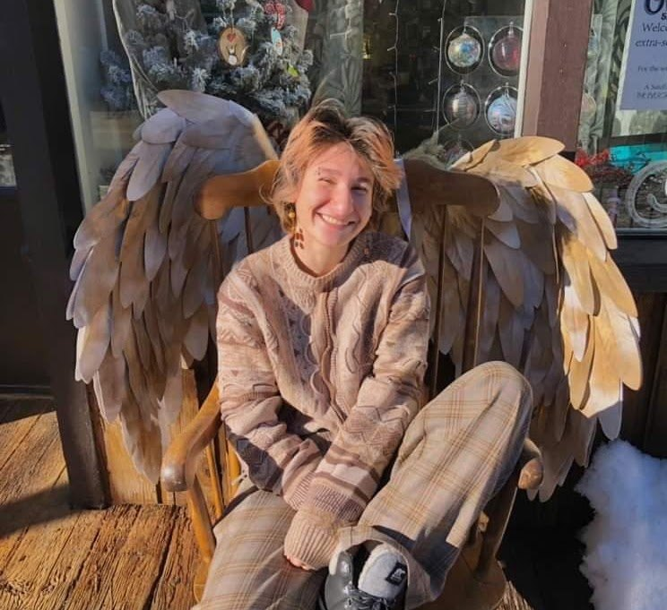
Atlas Zaina
Undergraduate Student, ATLAS Institute
SPRING '24 STAFF
Atlas.Zaina@colorado.edu
I am a wizard with:
General Tools
Wood Shop
Sewing & Textiles
Lasers
Funny little crafts and more!
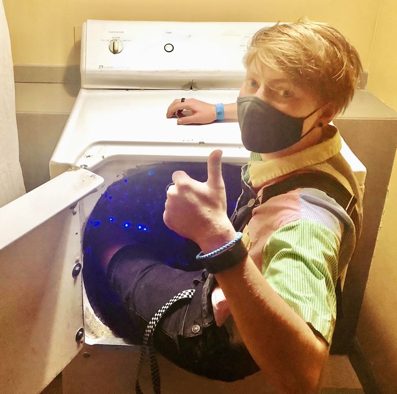
Kai Hughes
kai.hughes@colorado.edu
I am so very good at:
3D printing and 3D modeling
Digital art and graphic design
Woodshop stuff
Coding languages
Mold making / casting
Creating problems
Solving problems
Jeremiah Klinkerman (image approximate)
Undergraduate, Dinosaur Studies
SPRING '24 STAFF
jeremiah.klinkerman@colorado.edu
Things I can help with:
General Tools
Wood Shop
Sewing & Textiles
2D Drawing
3D Sculpture
Dinosaurs & Rocks
S Wu (currently in Canada!)
PhD Student, ATLAS Institute
shanel.wu@colorado.edu
Ask me about:
Anything textiles/yarn
Electronics + circuits
General tools
Debugging code
Brainstorming + prototyping
How to survive academic writing
A strange smattering of many other things
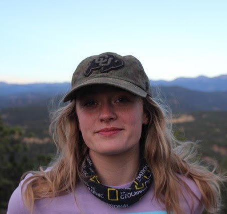
McClain Martensen (Graduated!)
Undergraduate Student, ATLAS Institute
moma0500@colorado.edu
Things I know:
3D printing
3D modelling
Woodshop
Electronics/Soldering
Sewing/Textiles
Prototyping
Gray Assi (Graduated!)
CTD Undergraduate Student, ATLAS Institute
gray.assi@colorado.edu
Ask me about:
prototyping
experience design
sewing + textiles
soldering + electronics
Hi! I'm Dover Horesh (Graduated!)
Graduate Student, ATLAS Institute
diho2148@colorado.edu
I work magic with:
Laser Cutter (Lazor Wizard)
Wood Shop
Sewing Machine
Photography
Katie Gilchrist (Graduated!)
Graduate Student, ATLAS Institute
kagi6366@colorado.edu
I can do the things:
Basic Tools
Soldering & Electronics
Code
3D Modeling
More as I learn them!